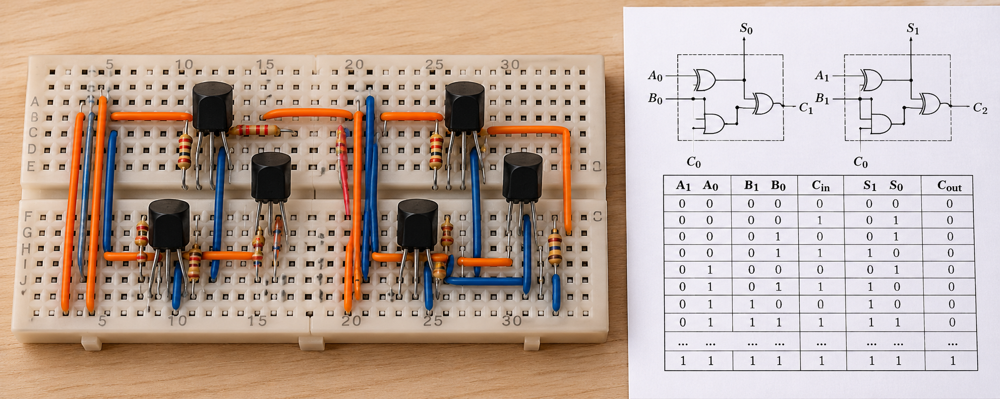
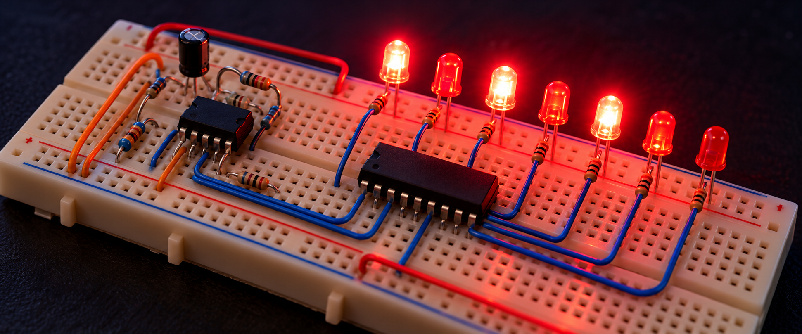
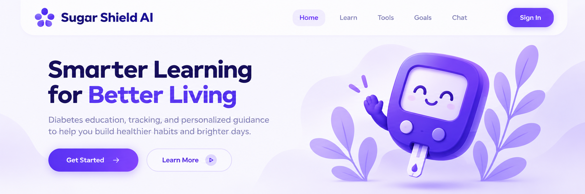
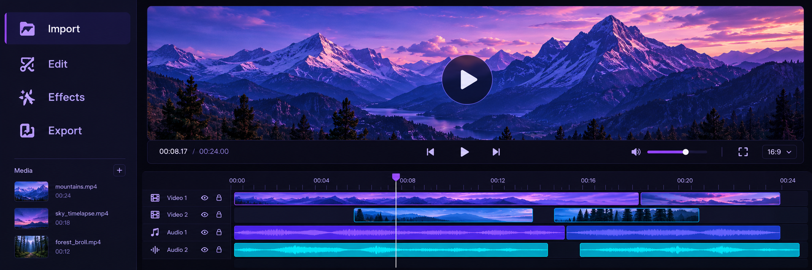

01 / DIGITAL LOGICHello, I’m Sachin
Sachin Nagaraj Mevundi
Building across software and electronics.
Second-year Electronics and Communication Engineering student at RV Institute of Technology and Management, Bengaluru. I enjoy building things at the intersection of software, electronics, and AI.
CIRCUITS
CODE
AI
IMPACT
About
A little about me.
I study Electronics and Communication Engineering at RV Institute of Technology and Management in Bengaluru. I’m interested in both software and hardware, and I learn best by building—whether that means exploring digital logic, writing C++, or connecting a circuit to an idea.
One connected practice
Software, electronics, and hands-on experimentation.
Featured projects
Things I’ve built.
A mix of circuit projects and software experiments.

02 / SEQUENTIAL LOGIC
03 / EDUCATIONAL WEB APP
04 / TEXT + VOICE

05 / HACKERRING 2.0Technical interests
Areas I’m interested in.
C++
Data Structures
and Algorithms
and Algorithms
Digital Electronics
and Circuit Design
and Circuit Design
IoT and Embedded
Systems
Systems
AI
Full-Stack
Development
Development
Hardware–Software
Integration
Integration
Hackathon
Hackerring 2.0
Participated with team Nocturnals (four members) in the Voice AI track. Advanced to the offline Round 2 final and received a participation certificate.
HACKERRING 2.0
- October 8–10, 2026
- Team Nocturnals
(4 members) - Voice AI track
Education
B.E. Electronics and
Communication Engineering
RV Institute of Technology
and Management, Bengaluru
Second Year
Have something interesting in mind?
Let’s build something great.
I’m always glad to connect about software, electronics, and hands-on projects.